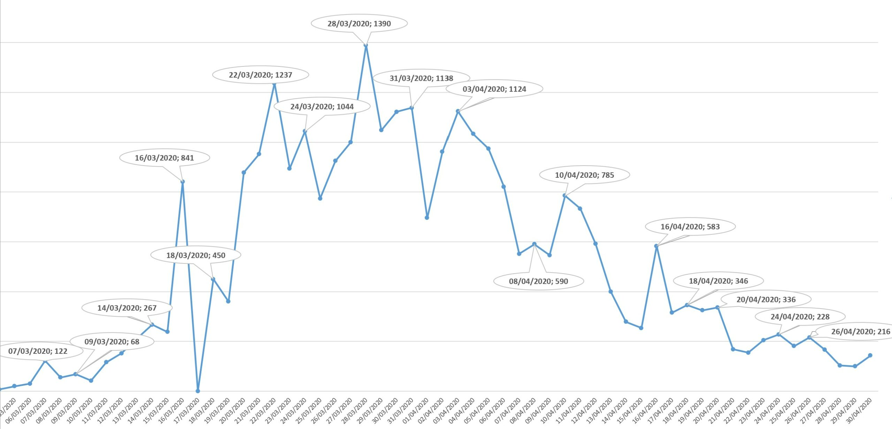

This was first published on https://www.dbi-services.com/blog/oracle-row-pattern/ (2020-06-08)
Republishing here for new followers. The content is related to the versions available at the publication date.
.
This post is part of a series of small examples of recent features. I’m running this in the Oracle 20c preview in the Oracle Cloud. I’ll show a very basic example of “Row Pattern Recognition” (the MATCH_RECOGNIZE clause in a SELECT which is documented as “row pattern matching in native SQL” feature by Oracle”). You may be afraid of those names. Of course, because SQL is a declarative language there is a small learning curve to get beyond this abstraction. Understanding procedurally how it works may help. But when you understand the declarative nature it is really powerful. This post is there to start simple on a simple table with time series where I just want to detect peaks (the points where the value goes up and then down).
Historically, a SELECT statement was operating on single rows (JOIN, WHERE, SELECT) within a set, or an aggregation of rows (GROUP BY, HAVING) to provide a summary. Analytic functions can operate on windows of rows (PARTITION BY, ORDER BY, ROWS BETWEEN,…) where you keep the detailed level or rows and compare it to the aggregated values of the group. A row can then look at its neighbours and when needing to go further, the SQL MODEL can build the equivalent of spreadsheet cells to reference other rows and columns. As in a spreadsheet, you can also PIVOT to move row detail to columns or vice versa. All that can be done in SQL, which means that you don’t code how to do it but just define the result you want. However, there’s something that is easy to do in a spreadsheet application like Excel but not easy to code with analytic functions: looking at a Chart, as a Line Graph, to detect some behaviour. That’s something we can code in SQL with MATCH_RECOGNIZE.
For example, from the “COVID” table I have imported in the previous post I want to see each peak of covid-19 cases in Switzerland:

I did this manually in Excel: showing all labels but keeping only those that are at a peak, whether it is a small peak or high one. There’s one value per day in this timeseries but I’m am not interested by the intermediate values. Only peaks. So, this was done from the .csv imported from http://opendata.ecdc.europa.eu/covid19/casedistribution/csv/ through an external table but, as I imported it into an Oracle table for the previous post (Oracle 18c – select from a flat file).
Ok, let’s show directly the result. Here is a small SQL statement that show me exactly those peaks, each match being numbered:
SQL> select countriesandterritories "Country","Peak date","Peak cases","match#"
2 from covid
3 match_recognize (
4 partition by continentexp, countriesandterritories order by daterep
5 measures
6 match_number() as "match#",
7 last(GoingUp.dateRep) as "Peak date",
8 last(GoingUp.cases) as "Peak cases"
9 one row per match
10 pattern (GoingUp+ GoingDown+)
11 define
12 GoingUp as ( GoingUp.cases > prev(GoingUp.cases) ),
13 GoingDown as ( GoingDown.cases < prev(GoingDown.cases))
14 )
15 where countriesandterritories='Switzerland';
Country Peak date Peak cases match#
______________ ____________ _____________ _________
Switzerland 26-FEB-20 1 1
Switzerland 28-FEB-20 7 2
Switzerland 07-MAR-20 122 3
Switzerland 09-MAR-20 68 4
Switzerland 14-MAR-20 267 5
Switzerland 16-MAR-20 841 6
Switzerland 18-MAR-20 450 7
Switzerland 22-MAR-20 1237 8
Switzerland 24-MAR-20 1044 9
Switzerland 28-MAR-20 1390 10
Switzerland 31-MAR-20 1138 11
Switzerland 03-APR-20 1124 12
Switzerland 08-APR-20 590 13
Switzerland 10-APR-20 785 14
Switzerland 16-APR-20 583 15
Switzerland 18-APR-20 346 16
Switzerland 20-APR-20 336 17
Switzerland 24-APR-20 228 18
Switzerland 26-APR-20 216 19
Switzerland 01-MAY-20 179 20
Switzerland 09-MAY-20 81 21
Switzerland 11-MAY-20 54 22
Switzerland 17-MAY-20 58 23
Switzerland 21-MAY-20 40 24
Switzerland 24-MAY-20 18 25
Switzerland 27-MAY-20 15 26
Switzerland 29-MAY-20 35 27
Switzerland 06-JUN-20 23 28
28 rows selected.
Doing that with analytic functions or MODEL clause is possible, but not easy.
So let’s explain the clauses in this simple example.
I’ll need to define what is a peak. For that, I need to define two very primary patterns. The value I’m looking for, which is the one you see on the graph, is the column “CASES”, which is the number of covid-19 cases for the day and country. How do you detect peaks visually? Like when hiking in mountains: it goes up and when you continue it goes down. Here are those two primary patterns:
11 define
12 GoingUp as ( GoingUp.cases >= prev(GoingUp.cases) ),
13 GoingDown as ( GoingDown.cases < prev(GoingDown.cases))
“GoingUp” matches a row where “cases” value is higher than the preceding row and “GoingDown” matches a row where “cases” is lower than the preceding one. The sense of “preceding one”, of course, depends on an order, like with analytic functions. We will see it below.
A peak is when a row matches GoingDown just after matching GoingUp. That’s simple but you can imagine crazy things that a data scientist would want to recognize. And then the MATCH_RECOGNIZE defines patterns in a similar way as Regular Expressions: mentioning the primary patterns in a sequence with some modifiers. Mine is so simple:
10 pattern (GoingUp+ GoingDown+)
This means: one or more GoingUp followed by one or more GoingDown. This is exactly what I did in the graph above: ignore intermediate points. So, the primary pattern compares a row with the preceding only and consecutive comparisons are walked through and compared with the pattern.
As mentioned, I follow the rows in order. For a timeseries, this is simple: the key is the country here, I partition by continent and country, and the order (x-axis) is the date. I’m looking at the peaks per country when the value (“cases”) is ordered by date (“daterep”):
2 from covid
...
4 partition by continentexp, countriesandterritories order by daterep
...
15* where countriesandterritories='Switzerland';
I selected only my country here with a standard where clause, to show simple things.
Eatch time a pattern is recognized, I want to display only one row (“ONE ROW PER MATCH”) with some measures for it. Of course, I must access to the point I’m interested in: the x-axis date and y-axis value for it. I can reference points within the matching window and I use the pattern variables to reference them. The peak is the last row in the “GoingUp” primary pattern and last(GoingUp.dateRep) and last(GoingUp.cases) are my points:
5 measures
6 match_number() as "match#",
7 last(GoingUp.dateRep) as "Peak date",
8 last(GoingUp.cases) as "Peak cases"
9 one row per match
Those measures are accessible in the SELECT clause of my SQL statement. I added the match_number() to identify the points.
Here is the final query, with the partition, measures, pattern and define clauses within the MATCH_RECOGNIZE():
select countriesandterritories "Country","Peak date","Peak cases","match#"
from covid
match_recognize (
partition by continentexp, countriesandterritories order by daterep
measures
match_number() as "match#",
last(GoingUp.dateRep) as "Peak date",
last(GoingUp.cases) as "Peak cases"
one row per match
pattern (GoingUp+ GoingDown+)
define
GoingUp as ( GoingUp.cases > prev(GoingUp.cases) ),
GoingDown as ( GoingDown.cases < prev(GoingDown.cases))
)
where countriesandterritories='Switzerland';
The full syntax can have more and of course all is documented: https://docs.oracle.com/database/121/DWHSG/pattern.htm#DWHSG8982
In order to understand how it works (and debug) we can display “all rows” (ALL ROWS PER MATCH instead of ONE ROW PER MATCH in line 9), and add the row columns (DATEREP and CASES in line 1) and, in addition to the match_number() I have added the classifier() measure:
1 select countriesandterritories "Country","Peak date","Peak cases","match#",daterep,cases,"classifier"
2 from covid
3 match_recognize (
4 partition by continentexp, countriesandterritories order by daterep
5 measures
6 match_number() as "match#", classifier() as "classifier",
7 last(GoingUp.dateRep) as "Peak date",
8 last(GoingUp.cases) as "Peak cases"
9 all rows per match
10 pattern (GoingUp+ GoingDown+)
11 define
12 GoingUp as ( GoingUp.cases > prev(GoingUp.cases) ),
13 GoingDown as ( GoingDown.cases < prev(GoingDown.cases))
14 )
15* where countriesandterritories='Switzerland';
“all rows per match” shows all rows where pattern matching is tested, classifier() shows which primary pattern is matched.
Here are the rows around the 10th match. You must keep in mind that rows are processed in order and for each row, it looks ahead to recognize a pattern.
Country Peak date Peak cases match# DATEREP CASES classifier
______________ ____________ _____________ _________ ____________ ________ _____________
...
Switzerland 24-MAR-20 1044 9 24-MAR-20 1044 GOINGUP
Switzerland 24-MAR-20 1044 9 25-MAR-20 774 GOINGDOWN
Switzerland 26-MAR-20 925 10 26-MAR-20 925 GOINGUP
Switzerland 27-MAR-20 1000 10 27-MAR-20 1000 GOINGUP
Switzerland 28-MAR-20 1390 10 28-MAR-20 1390 GOINGUP
Switzerland 28-MAR-20 1390 10 29-MAR-20 1048 GOINGDOWN
Switzerland 30-MAR-20 1122 11 30-MAR-20 1122 GOINGUP
Switzerland 31-MAR-20 1138 11 31-MAR-20 1138 GOINGUP
Switzerland 31-MAR-20 1138 11 01-APR-20 696 GOINGDOWN
Switzerland 02-APR-20 962 12 02-APR-20 962 GOINGUP
Switzerland 03-APR-20 1124 12 03-APR-20 1124 GOINGUP
Switzerland 03-APR-20 1124 12 04-APR-20 1033 GOINGDOWN
You see here how we came to output the 10th matched (28-MAR-20 1390 cases). After the peak of 24-MAR-20 we were going down the next day 25-MAR-20 (look at the graph). This was included in the 10th match because of regular expression “GoingDown+”. Then up 26-MAR-2020 to 28-MAR-20, which matches GoingUp+ followed by a “GoingDown” on 29-MAR-20 which means that a 11th match has been recognized. It continues for all “GoingDown+” but there’s only one here as the next one is a higher value: 1122 > 1048 so the 11th match is closed here on 29-MAR-20. This is where the ONE ROW PER MATCH is returned, when processing the row from 29-MAR-20, with the values from the last row classified as GOINGUP, and defined in the measures, which are 28-MAR-20 and 1390. And then the pattern matching continues from this row and a GoingUp has been detected…
If you want to go further, there are good examples from Lucas Jellama: https://technology.amis.nl/?s=match_recognize
And about its implementation in SQL engines, read Markus Winand https://modern-sql.com/feature/match_recognize
And I’ll probably have more blog posts here in this series about recent features interesting for BI and DWH…